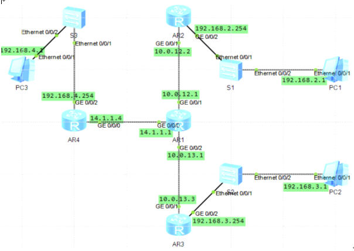

RIP路由协议
动态路由协议 小型网络适用
配置地址
#
r1
interface GigabitEthernet0/0/0
ip address 10.0.12.1 255.255.255.0
interface LoopBack0
ip address 10.0.1.1 255.255.255.0
r2
interface GigabitEthernet0/0/0
ip address 10.0.12.2 255.255.255.0
interface LoopBack0
ip address 10.0.2.2 255.255.255.0
#
r1
rip 1
network 10.0.0.0
r2
rip 1
network 10.0.0.0
查看路由表
使用RIPv2搭建网络
基于前面配置现在只需修改v2配置即可
两台路由器上配置ripv2
rip
version 2
查看路由表
RIPv2的路由信息携带子网掩码
RIPv2的路由信息中携带下一跳地址
RIPv2默认采用组播方式发送报文，地址为224.0.0.9
配置RIPv2认证
常规配置RIPv2
配置简单验证方式密码为huawei 明文的
r1
int g 0/0/1
rip authentication-mode simple huawei
r2
int g 0/0/1
rip authentication-mode simple huawei
配置md5密文验证
r1
int g 0/0/1
undo authentication-mode
rip authentication-mode md5 usual huawei
r2
int g 0/0/1
undo authentication-mode
rip authentication-mode md5 usual huawei
配置RIPv2自动汇总
RIPv2自动汇总，默认是开启的，可以关闭
rip 1
version 2
配置RIPv2手工汇总
华为设备上，接口上默认弃用了水平分割功能，防止环路和不连续子网问题，默认的RIPv2自动汇总就会失效
要使用RIPv2的默认自动汇总生效两种办法
第一种，summary always，不论水平分割是否启用都生效
[r3]rip
[r3]version 2
[r3]summary always
第二种，关闭相应接口下的水平分割功能
[r3]int g 0/0/0
[r3]undo rip split-horizon
查看路由表
自动汇总成功
RIPv2手工汇总，配合需要汇总的本地网络IP地址为3.3.0.0/22
[r3]int g 0/0/0
[r3]rip summary-address 3.3.0.0 255.255.255.0
配置RIP版本定时器 让RIPv1和RIPv2版本兼容
r1
interface GigabitEthernet0/0/0
ip address 10.0.12.1 255.255.255.0
#
interface GigabitEthernet0/0/1
ip address 192.168.10.1 255.255.255.0
r2
interface GigabitEthernet0/0/0
ip address 10.0.12.2 255.255.255.0
#
interface GigabitEthernet0/0/1
ip address 192.168.20.1 255.255.255.0
配置RIP协议版本兼容
r1
rip
network 10.0.0.0
network 192.168.10.0
r2
rip
network 10.0.0.0
network 192.168.20.0
version 2
查看路由表 发现不兼容 修改配置
r1
int g 0/0/0
rip version 2 broadcast
所以建议选择相同版本的RIP协议
配置RIP定时器
默认情况下RIP协议会每隔30S左右发送一次路由更新
路由更新的有效期为超时定时器定义的180s，180s内未收到路由更新，则宣布路由不可达，从路由表中清楚掉该路由条目
通过timers rip命令改变定时器的默认值来影响收敛速度
将r1更新报文时间间隔修改为20s
超时计时器超时时间修改为120s
垃圾收集超时时间修改为60s
rip 1
timers rip 20 120 60
一个简单的RIP引入

配置RIPv2
优化RIP
因为PC不需要RIP通告 不需要接受无用的RIP更新报文
采用引入直连路由，使用import-route direct引入，指定引入的源路由协议为直连路由
r2
rip 1
undo network 192.168.2.0
import-route direct
查看路由表
r3同样配置
rip 1
undo network 192.168.3.0
import-route direct
在公司B的网关设备上配置静态地址
192.168.4.0/24，并在RIP进程中引入该条静态路由，引入后公司B中RIP网络内会通过RIP协议自动学习
[r1]ip route-static 192.168.4.0 24 14.1.1.4
[r1]rip 1
[r1-rip-1]import-route static
查看其他路由表
配置r4静态路由
[r4]ip route-static 0.0.0.0 0.0.0.0 14.1.1.1
测试